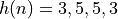

L4: FIR filter implementation¶
The purpose of this lecture is as follows.
- To describe the direct-form and transpose-form implementations of FIR designs
- To describe the cascade-form implementations of FIR designs
- To describe frequency-sampling implementations of FIR designs
- To describe memory management optimization in FIR implementation
Direct-form and Transpose-form FIR implementation¶
Let’s recap the standard, direct-form representation of an FIR filter as discussed last lecture.
The Z-transform of an FIR is a polynomial in  .
.
The sequence is the impulse response of the FIR filter. This sequence is bounded.
The classic direct-form implementation of an FIR filter is done by implementing a tapped delay line.
The following is an example of a third-order FIR filter. Such a filter would have three zeroes in the z-plane
and three poles at  .
It has 4 multiplications with coefficients, 3 additions, and three delays.
.
It has 4 multiplications with coefficients, 3 additions, and three delays.
Interestingly, the impulse response of the FIR can be produced by an alternate structure, called the transpose-form implementation. Unlike the direct-form implementation, the transpose-form implementation multiplies an input sample with all filter coefficients at the same time, and then accumulates the result. Note that the order of the impulse response coefficients is reversed.
Optimizing for Symmetry (Linear Phase FIR)¶
We already know that the time-domain shape of a signal is determined by both the phase information as well as the amplitude information of its frequency components. If phases are randomly changed, then the time-domain shape will be distored.
Think, for example, about how we are measuring the spectrum of a filter, by injection random noise at the input. Random noise contains all frequencies, just like a Dirac impulse. But unlike a Dirac impulse, random noise has random phase. Therefore, we have a time domain response spread out over time, rather than a single, sharp impulse.
Many applications in communications (digital modulation, software radio, etc) rely on precise time-domain representation of signals; we will discuss such an application in a later lecture of the course. In digital communications applications, filters with a linear phase response are desired, because such filters introduce a uniform delay as a function of frequency. In other words: a signal that fits within the passband of a linear phase filter, will appear undistorted at the output of the filter.
Indeed, assume that the phase response is of the form . A sinusoid that is affected by this phase change, becomes:
Thus, a linear phase response causes a time-shift of the sinusoid, independent of its frequency. This means that an arbitrarily complex signal, which can be written as a sum of phasors (sines/cosines), will also be affected by a time-shift, independent of its frequency.
Linear phase filters have a symmetric impulse response, and there are four types of symmetry, depending on the odd/even number of taps, and the odd/even symmetry of the impulse response. All of these filters have a linear phase response.
The symmetric response of linear FIR design enables an important optimization for either direct-form or else transpose form FIR designs: we can reduce the number of coefficient multiplications by half. For example, here is an optimized Type-III, 3-tap FIR:
Optimizing Common Subexpressions¶
The transpose form is convenient when the implementation is able to perform parallel multiplications efficiently, or when parallel multiplications can be jointly optimized.
For example, the following filter coefficient optimization is common in hardware designs of fixed-coefficient FIRs. The transpose form can be optimized for common subexpressions. Since the same input x is multiplied with every filter coefficient at the same time, the common parts of the multiplication can be shared. Consider the impulse response . This series of coefficients is symmetric, meaning that only a single multiplication with 3 and with 5 is needed. In addition, the multiplications with 3 and with 5 share commonalities. Since 3 = 1 + 2 and 5 = 1 + 4, we can implement these multiplications using constant shifts by 2, and then accumulating the results:
In other words, we can rewrite the following set of expressions:
1 // input x 2 // state_variable: d2, d1, d0 3 // output y 4 y = d2 + x * 3; 5 d2 = d1 + x * 5; 6 d1 = d0 + x * 5; 7 d0 = x * 3;
into the following set of expressions - avoiding multiplications. This would be especially advantageous in a hardware design, because it significantly reduces the implementation cost. In software, where the cost of a ‘*’ operation and a ‘+’ operation are similar, such optimization may have less (or no) impact.
1 // input x 2 // temporary variable x2, x4, s3, s5; 3 // state_variable: d2, d1, d0 4 // output y 5 x2 = x << 1; 6 x4 = x2 << 1; 7 s3 = x + x2; 8 s5 = x + x4; 9 y = d2 + s3; 10 d2 = d1 + s5; 11 d1 = d0 + s5; 12 d0 = s3;
Cascade-form FIR implementation¶
A polynomial expression in H(z) can be factored into sub-expressions of first-order factors as follows.
In the decomposed form, the first-order terms represent the zeroes for H(z). If h(n) is real, then the roots of H(z) will come in complex conjugate pairs, which can be combined into second-order expressions with real coefficients. Such real coefficients are preferable, of course, because they can be directly implemented using a single multiply operation.
Example - Cascade Design for the Averager¶
Consider the moving average filter we discussed last lecture.

This filter has seven zeroes, regularly distributed around the unit circle with the exception of the location z=1.
We can identify three complex conjugate zero pairs, which can be written as second-order sections. If a complex conjugate pair has zeroes at locations , then the second-order location can be written as follows.
The complex conjugate pairs are located at , , , which leads to the following second order stages:
Putting everything together, we then obtain the following cascade filter. Note that this design has added an extra delay at the input, as well as an extra zero (at ).
Example - C code for the Averager Cascade Design¶
Note
This example is available in the dsp_l4 repository as dsp_l4_cascade.
We will now implement this filter in C code. Since the cascade form is repetitive, it makes sense to implement it as a separate function. It’s worthwhile to consider the regularity of this problem. The filter, in essence, can be captured in four cascade filters. Therefore, we will write C code for a single cascade filter, and replicate it in order to create the overall filter.
Let’s start with the single cascade stage. The casecadestate_t is a data type that
stores the cascade filter taps as well as the coefficients. Since we are creating
a repetition of filters, we have to keep the state as well as the coefficients of the individual
stages separate, and this record helps us do that. Next, the cascadefir computes
the response on a single casecade stage. The function evaluates the output, and updates
the state as the result of entering a fresh sample x. Finally, the createcascade
function is a helper function to initialize the coefficients in a casecadestate_t type.
1 typedef struct cascadestate { 2 float32_t s[2]; // filter state 3 float32_t c[2]; // filter coefficients 4 } cascadestate_t; 5 6 float32_t cascadefir(float32_t x, cascadestate_t *p) { 7 float32_t r = x + (p->s[0] * p->c[0]) + (p->s[1] * p->c[1]); 8 p->s[1] = p->s[0]; 9 p->s[0] = x; 10 return r; 11 } 12 13 void createcascade(float32_t c0, 14 float32_t c1, 15 cascadestate_t *p) { 16 p->c[0] = c0; 17 p->c[1] = c1; 18 p->s[0] = p->s[1] = 0.0f; 19 }
We are now ready to build the overall filter. This will break down into two functions, the first one to initialize the individual cascade states according to the filter specifications, and the second one to execute the processing of a single sample. The four cascade filters are created as global variables, so that they are easy to access from withing the ADC interrupt callback. The initcascade function defines the coefficients as defined earlier. The M_SQRT2 macro is a pre-defined macro in the C math library that holds the square root of 2. The processCascade function computes the output of the input. The overall
filter includes an extra delay (to implement  ), which is captured with the local
), which is captured with the local static variable d.
1 cascadestate_t stage1; 2 cascadestate_t stage2; 3 cascadestate_t stage3; 4 cascadestate_t stage4; 5 6 void initcascade() { 7 createcascade( 0.0f, 1.0f, &stage1); 8 createcascade( M_SQRT2, 1.0f, &stage2); 9 createcascade(-M_SQRT2, 1.0f, &stage3); 10 createcascade( 1.0f, 0.0f, &stage4); 11 } 12 13 uint16_t processCascade(uint16_t x) { 14 15 float32_t input = adc14_to_f32(0x1800 + rand() % 0x1000); 16 float32_t v; 17 static float32_t d; 18 19 v = cascadefir(d, &stage1); 20 v = cascadefir(v, &stage2); 21 v = cascadefir(v, &stage3); 22 v = cascadefir(v, &stage4); 23 d = input; 24 25 return f32_to_dac14(v*0.125); 26 }
If we run the function and compute the output, we can find that this design has an identical response as the previous direct-form design.
The appeal of the cascade form FIR is the regularity of the design, as well as (as discussed later), a better control over the precision and range of intermediate variables.
Frequency-sampling FIR¶
A fourth form of FIR structure, next to direct-form, transpose-form and cascade-form design, is that of frequency sampling. Interestingly, the frequency-sampling structure is a recursive structure, despite the fact that its impulse response is finite in length.
A basic building block of a frequency-sampling FIR is a resonator, a structure with a complex conjugate pole-pair on the unit circle, together with a double zero in the unit circle origin.
The time-domain response of this design is given by
For example, if then the time-domain response is given by
The resonator by itself is not a useful filter. This structure is not stable, and after a single impulse response it keeps oscillating.
| x(n) | y(n-2) | y(n-1) | y(n) |
|---|---|---|---|
| 0 | 0 | 0 | 0 |
| 1 | 0 | 0 | 1 |
| 0 | 0 | 1 | 1 |
| 0 | 1 | 1 | 0 |
| 0 | 1 | 0 | -1 |
| 0 | 0 | -1 | -1 |
| 0 | -1 | -1 | 0 |
| 0 | -1 | 0 | 1 |
| 0 | 0 | 1 | 1 |
| 0 | etc | etc | etc |
However, when the resonator is combined with a comb filter structure, which we discussed last week, we obtain a frequency-sampling filter. A comb filter with m teeth is a FIR of the form
If a resonator is driven by the output of a comb filter, then the unstable characteristic of the resonator is cancelled by a matching zero of the comb filter. For example, let’s consider a comb filter with 24 teeth, i.e., a filter with zeroes on the unit circle at every .
This can be extended to an arbitrary response by adding additional resonator stages. The general design of a Frequency Sampling Filter then consists of (1) setting up a frequency grid as a comb filter, and (2) strategically eliminating zeroes using resonator stages in order to create the desired response. The design is fairly rudimentary, as we cannot select the gain of the filter at a particular frequency - we can only let a frequency pass or eliminate it. Furthermore, we can only constrain the response at a specific number of points, corresponding to the locations of zeroes defined by the comb filter.
On the other hand, compared to a pure feedforward FIR design, the frequency sampling filter is more economical, and can be realized using fewer taps.
Note
This example is available in the dsp_l4 repository as dsp_l4_fsampling.
Memory Management in FIR¶
FIR designs can become relatively complex, up to a few hundred taps with coefficients. Hence, at some point the implementation of the FIR delay line becomes an important factor in the filter performance.
Note
This example is available in the dsp_l4 repository as dsp_l4_longfilters.
In a straightforward design, the filter taps are shifted every sample. For an N-tap filter, this means N memory reads and N memory writes. Furthermore, for each memory access, the memory address for the tap has to be computed.
1 uint16_t processSampleDirectFull(uint16_t x) { 2 float32_t input = adc14_to_f32(x); 3 4 taps[0] = input; 5 6 float32_t q = 0.0; 7 uint16_t i; 8 for (i = 0; i<NUMTAPS; i++) 9 q += taps[i] * B[i]; 10 11 for (i = NUMTAPS-1; i>0; i--) 12 taps[i] = taps[i-1]; 13 14 return f32_to_dac14(q); 15 }
Complexity Analysis¶
To understand the complexity of this function, we can study the assembly code (found under Debug/main.lst in Code Composer Studio). We can clearly distinguish the loops by looking for the jump instructions and the jump target labels. The register names starting with V carry floating-point variables. It’s remarkable that the computational core of this algorithm, the expression q += taps[i] * B[i] in the C program,
is captured by a single instruction VMLA (floating-point multiply accumulate).
1 processSampleDirectFull: 2 PUSH {A4, V3, V4, LR} 3 BL adc14_to_f32 4 VMOV.F32 S1, S0 5 LDR A1, $C$FL4 6 LDR A3, $C$CON15 7 LDR A2, $C$CON14 8 VMOV S0, A1 9 LDRH V3, [A3, #0] 10 VSTR.32 S1, [A2, #0] 11 CBZ V3, ||$C$L5|| 12 LDR A1, $C$CON17 13 MOV V4, V3 14 MOV A3, A2 15 ||$C$L4||: ; 16 LDR A4, [A3], #4 ; 17 VMOV S1, A4 ; 18 LDR A4, [A1], #4 ; for (i = 0; i<NUMTAPS; i++) 19 VMOV S2, A4 ; q += taps[i] * B[i]; 20 SUBS V4, V4, #1 ; 21 VMLA.F32 S0, S2, S1 ; 22 BNE ||$C$L4|| ; 23 SUBS V3, V3, #1 24 UXTH A1, V3 25 CBZ A1, ||$C$L7|| 26 ADD A2, A2, A1, LSL #2 27 ||$C$L6||: ; 28 VLDR.32 S1, [A2, #-4] ; 29 SUBS A1, A1, #1 ; 30 VMOV A3, S1 ; for (i = NUMTAPS-1; i>0; i--) 31 UXTH A1, A1 ; taps[i] = taps[i-1]; 32 CMP A1, #0 ; 33 STR A3, [A2], #-4 ; 34 BNE ||$C$L6|| ; 35 ||$C$L7||: 36 BL f32_to_dac14 37 POP {A4, V3, V4, PC}
Important
The previous listing is an example of ARM assembly code. While I do not expect you to memorize the exact ARM mnemonics, it will be helpful (and interesting) to become used to the based form and format of assembly listings. A list of ARM Cortex-M4 instructions can be found on the ARM Developer Pages.
A line such as
||$C$L6||:
is a label; it represents the target address of the instruction just after the label.
You can use labels and match them with jump instructions to establish the beginning
and ending of a loop. The jump instruction matching ||$C$6|| is BNE:
||$C$L6||:
...
BNE ||$C$L6||
ARM instructions are in the format <instruction, destination, source>. For example, the following instruction means move register A4 to register S2.
VMOV S2, A4
Memory operations include LDR (load register) and STR (store register). Memory operations specify a memory address, and ARM supports a range of addressing modes to specify the address. For example, the following instruction stores the contents of register A3 in the memory location pointed by register A2. Afterwards, modify register A2 by subtracting 4.
STR A3, [A2], #-4
As another example, the following instruction stores S1 to the memory address pointed to by A2 minus 4.
VLDR.32 S1, [A2, #-4]
Studying the assembly helps us to appreciate the overhead of data movement. First, note that the loop body of the filter delay-line shift (loop ||$C$L6||) contains 7 instructions, while the loop body of the filter multiply-accumulate (loop ||$C$L4||) contains 7 instructions as well! In addition, the delay-line shift contains a memory-read (VLDR.32) as well as a memory-write (STR), while the multiply-accumulate loop contains two memory-read (LDR).
Optimization¶
A common optimization of delay lines is the use of a circular buffer. To see how to use a circular buffer on a FIR, let’s first consider the memory-access operations for a regular FIR. Each sample period, a new sample enters the filter state. The filter state is then multiplied with the coefficients to compute the filter output, and finally, the filter state is shifted in order to accept the next sample. New samples are entered at a fixed location in the filter state.
In a circular buffer strategy, we avoid shifting the filter state, but rather change the position where new samples are inserted. New samples will overwrite the oldest sample in the filter state, so that each sample period, the ‘head’ of the filter shifts backward in the array. When the beginning of the array is reached, the head jumps to the back. In this configuration, the ‘first’ tap in the filter state is continuously shifting, and therefore the filter coefficients have to be rotated accordingly. However, this rotation operation is easier to implement than shifting: because the coefficients do not change, the rotation operation can be implemented using index operations.
This leads to the following FIR design. Observe that the tap-shift loop has disappeared, while the address expressions have become more complicated. A new head variable is used to indicated the first tap in the filter state. This head circulates to all positions of the delay line until it wraps around.
1 uint16_t processSampleDirectFullCircular64(uint16_t x) { 2 float32_t input = adc14_to_f32(x); 3 4 taps[(64 - head) % 64] = input; 5 6 float32_t q = 0.0; 7 uint16_t i; 8 for (i = 0; i<64; i++) 9 q += taps[i] * B[(i + head) % 64]; 10 11 head = (head + 1) % 64; 12 13 return f32_to_dac14(q); 14 }
The assembly code for this implementation now shows that there are 9 operations in the inner multiply-accumulate loop. Note that modulo addressing with an arbitrary modulo is still an expensive operation (integer division). By keeping the delay line length at a power of two, the modulo operations are however economical (bitwise AND, as demonstrated in the assembly code).
1 processSampleDirectFullCircular64: 2 PUSH {A4, V1, V2, V3, V4, LR} 3 BL adc14_to_f32 4 MOVS V4, #64 5 LDR A3, $C$CON1 6 LDR V2, $C$FL1 7 LDR V3, $C$CON2 8 LDRH A1, [A3, #0] 9 LDR V1, $C$CON3 10 VMOV V9, S0 11 RSB A2, A1, #64 12 VMOV S0, V2 13 ASRS A4, A2, #5 14 ADD A4, A2, A4, LSR #26 15 BIC A4, A4, #63 16 SUBS A2, A2, A4 17 LSLS A4, A1, #2 18 STR V9, [V3, +A2, LSL #2] 19 ||$C$L1||: 20 LDR V2, [V3], #4 21 AND A2, A4, #252 22 SUBS V4, V4, #1 23 VMOV S1, V2 24 ADD A2, V1, A2 25 VLDR.32 S2, [A2, #0] 26 ADD A4, A4, #4 27 VMLA.F32 S0, S2, S1 28 BNE ||$C$L1|| 29 ADDS A1, A1, #1 30 AND A1, A1, #63 31 STRH A1, [A3, #0] 32 BL f32_to_dac14 33 POP {A4, V1, V2, V3, V4, PC}
Finally, using profiling, we compare the cycle cost of the original FIR design (with shifting) and the optimized FIR design (with a circular buffer). This shows a gain of
| FIR Design | 16 taps | 32 taps | 64 taps |
|---|---|---|---|
| tap-shift | 383 | 703 | 1343 |
| circular buffer | 306 | 530 | 913 |
| throughput (circular) | 1.25x | 1.32x | 1.47x |
Conclusions¶
We reviewed four different implementation styles for FIR filters: direct-form, transpose-form, cascade-form and frequency-sampling filter. The first three are able to implement any filter for which you can specific an finite impulse response. The frequency-sampling filter is a specific design technique that combines filter design and filter implementation.
Next, we also reviewed the impact of memory organization on FIR design. Memory operations are expensive, and the streaming nature of DSP tends to generate lots of memory accesses. FIR designs can be implemented using a circular buffer. The basic idea in memory optimization is to reduce data movement as much as possible, at the expense of more complex memory adderssing.
We have not discussed the design of FIR filters; a tool such as Matlab filterDesigners helps you compute filter coefficients, quantize filter coefficients, and compute amplitude/phase response. Please refer to Lab 2.
If time left: discuss Matlab filterDesigner